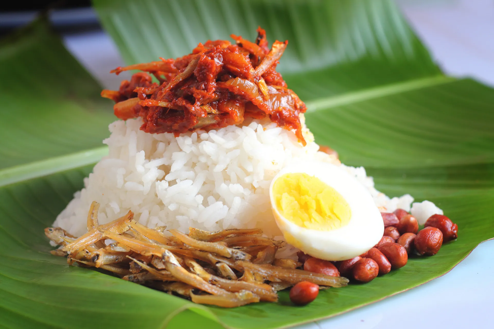

Nasi Lemak
Home

Description
Nasi Lemak is widely considered the national dish of Malaysia. It consists of fragrant rice cooked in coconut milk and pandan leaf.
It is traditionally served with a spicy sambal, crunchy anchovies (ikan bilis), toasted peanuts, and hard-boiled or fried egg.
Ingredients
- 2 cups rice
- 1 can coconut milk
- 3 pandan leaves (knotted)
- 1 cup dried anchovies (ikan bilis)
- 1 cup peanuts
- 4 eggs
- Sambal (Chili paste)
- Cucumber slices
Steps
- Wash the rice and cook it in a rice cooker with the coconut milk, a pinch of salt, and the knotted pandan leaves.
- While the rice cooks, fry the peanuts and anchovies in oil until golden brown and crunchy. Set aside.
- Boil or fry the eggs to your preference.
- Prepare the Sambal by sautéing chili paste with onions and sugar until the oil separates.
- Serve the hot coconut rice on a plate (or banana leaf) surrounded by the condiments.